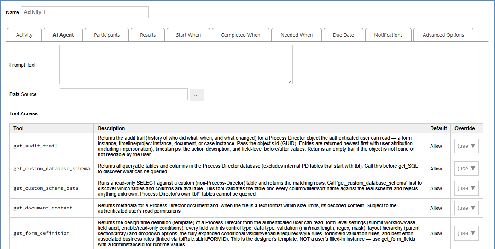

The AI Agent activity type enables you to invoke an AI agent to perform a task, then submit the results of that task to a user, to ensure a human remains in the loop to oversee, review, and approve any agentic activity.

The AI Agent tab enables you to configure the prompt and the permissions the AI Agent is allowed to use to perform the prompted task you wish to invoke.
The Prompt Text property contains the prompt you provide to the agent. For instance, you might provide a prompt such as, "Summarize the document attachments that are linked to this process."
The Data Source property is ab Object Picker that enables you to select the AI data source that you wish to use to perform the task.
The Tool Access section provides a list of permissions that you wish to extend to the AI agent you invoke. Each available property contains an explanation of the access the property provides to the agent. All permissions are set to Allow by default, but you have the following options to change the permissions for each item:
Because BP Logix has a "human in the loop" rule for all AI operations, this activity is also a user activity type, which means that, when the agent completes the activity, a user will be automatically assigned a task to complete this activity. The Participants and Results tabs must be configured like any other user activity, to specify the person who will review the results of the agentic activity, and to provide them with the appropriate review options to complete the assigned task.
To view the documentation for other Activity Types, you can navigate to them using the Table of Contents displayed in the upper right corner of the page, or by using one of the links below.
User: This Activity Type assigns a task to a user or users, which must be completed to end the task.
Notify: This Activity Type sends email notifications to users who aren't participants in the process.
Process: This Activity Type invokes a different process that will run as a separate, synchronous subprocess.
Script: This Activity Type enables you to invoke a custom script.
Custom Task: This Activity Type invokes a Custom Task to run when the Activity starts.
Form Actions: This Activity Type enables you to manipulate the Form used for the process.
Branch: This Activity Type enables you to change the operation of the Process Timeline to invoke a specified Activity.
Parent: This Activity Type serves as a container for other activities and to create a looping segment in a Process Timeline.
End Process: This Activity Type enables you to conditionally end a process.
Wait: This Activity Type enables you to pause a Process Timeline.
Case: This Activity Type enables you to manipulate the Case instance that is associated with the Process Timeline.